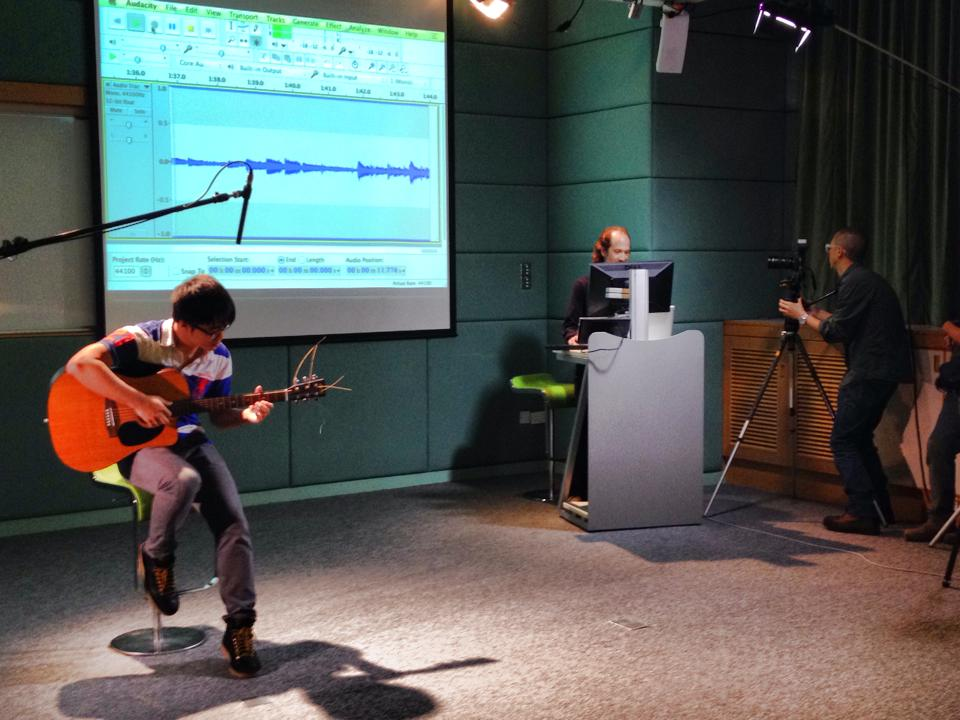

A Brief Bio About Me
I obtained my Ph.D. degree in HKUST (2011-2015), supervised by Prof. Andrew Horner and Prof. Qiang Yang. Prior to this, I obtained my B.E. degree from the Department of Information Security Engineering, Shanghai Jiao Tong University. I was born in Guangzhou, China, and my high school was Guangya Middle School.
I love music very much. I play trumpet, guitar, and love singing. I was crazy with trumpet when I was a secondary school student, and I was the chief of our ochestra. I love singing and won the first prize in my department in SJTU. Currently, I would like to find someone to band, just have fun. If you are interested, please contact me.
I also love sports. I used to be a member of the badminton team in SJTU, and I am in HKUST badminton team now. I used to play basketball a lot, but as I am no longer young, I love watching NBA games instead.

Thanks to being a CSE Ph.D., I travel a lot. Below are the countries I have visited so far. The upcoming destination is Indonesia.